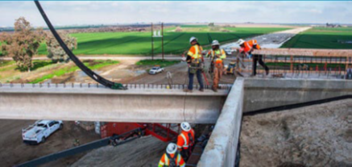
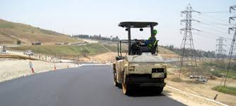
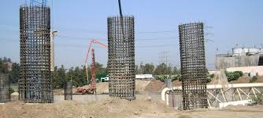

Project Details
- Category: Quality Management & Materials Testing Projects
- Owner: Public agency program
- Location: California
- Delivery Method: Project-specific delivery
- Status / Completion: Program support

Caltrans District 7 administers some of California�s most complex and high-volume transportation construction programs across dense urban corridors. To support continuous freeway reconstruction, interchange upgrades, and bridge rehabilitation, the District utilizes on-call materials testing contracts to maintain rigorous quality control across dozens of concurrent projects.
S2 Engineering provides comprehensive materials testing and quality verification services including: � Field sampling and testing of soils, aggregates, asphalt concrete, and structural concrete � Density testing and compaction verification � Concrete mix compliance and strength testing � Asphalt plant and paving operation monitoring � QA documentation and test reporting � Independent verification of contractor quality control results S2 mobilizes rapidly across multiple task orders, often supporting simultaneous mega-projects requiring high-volume testing and strict schedule coordination.
S2�s scalable staffing model and rapid response capabilities allow Caltrans to maintain continuous quality coverage without slowing production. Our disciplined documentation practices ensure full traceability of materials and test results across complex urban construction environments.
Columns

D6 Mat Testing

images (1)

images (2)